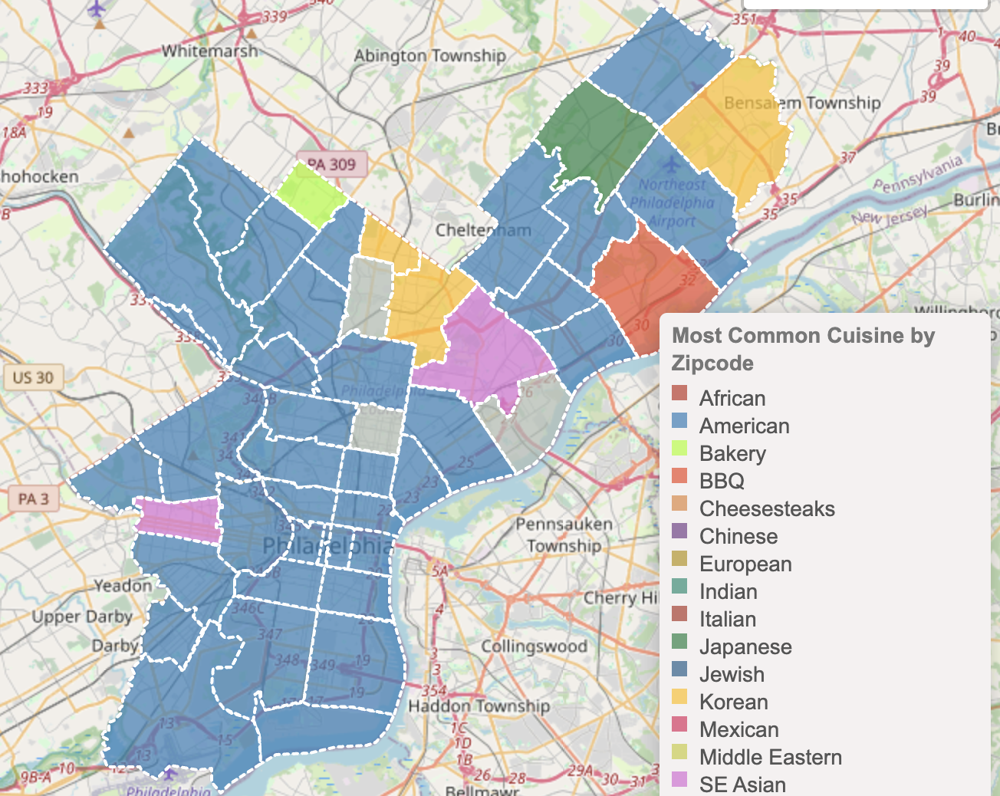
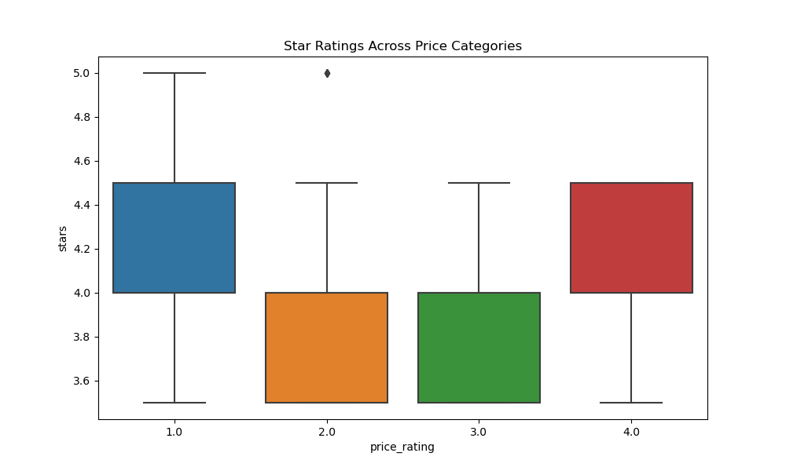
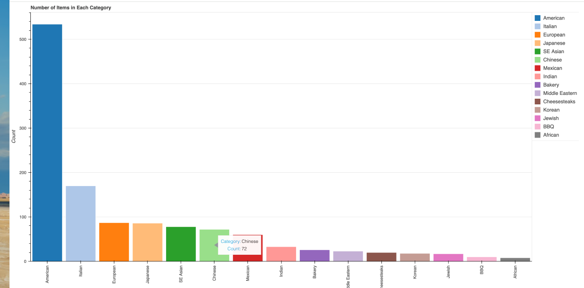
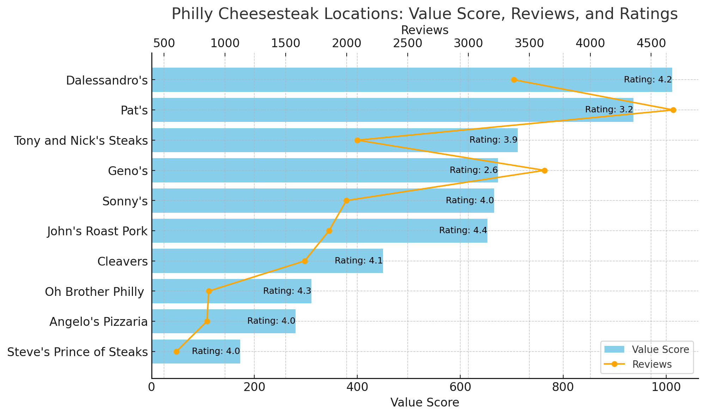

Tastes of Philadelphia
Michael Andia | Blake Bartlett | Christopher Duke | Tim McCarthy | Krissina Wells
This food map is a project conceptualized, designed, and developed to show different visualizations of the foods available in Philadelphia.
Dataset was courtesy of Yelp.
Our focus was on items that had a rating of 3.5 stars or greater.
Data was cleaned to combine similar food types for a more manageable dataset.
Map was generated using Leaflet to show foods by:
Type of food
Foods by neighborhood or Zip Code
Restaurant ratings
Charts were also generated to show a number of visualizations.

Interactive Food Map of Philadelphia

Boxplot of rating by price point

Pareto of food types

Most popular cheesesteak joints
Back to Home
×